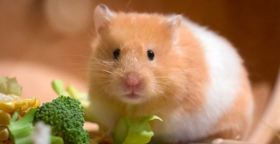
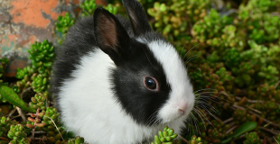

Les animaux de compagnie
Les chats
- Chartreux
- Européen
- Siamois
- Persan
Les chiens
-
- Jack Russel terrier
Les rongeurs domestiques
- Hamster :
Les hamsters (Cricetinae) sont de petits rongeurs de la famille des Cricetidae qui forment la sous-famille des Cricetinae.

- Lapin :
Le lapin est un gibier traditionnel, classé en cuisine avec les volailles et il est un mets apprécié dans de nombreux pays.
